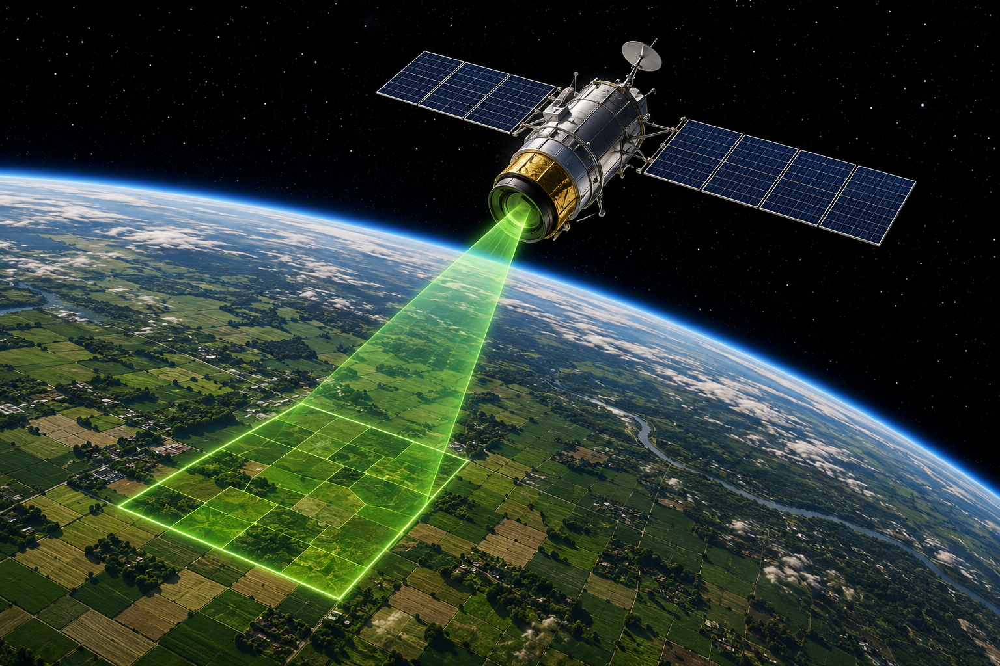
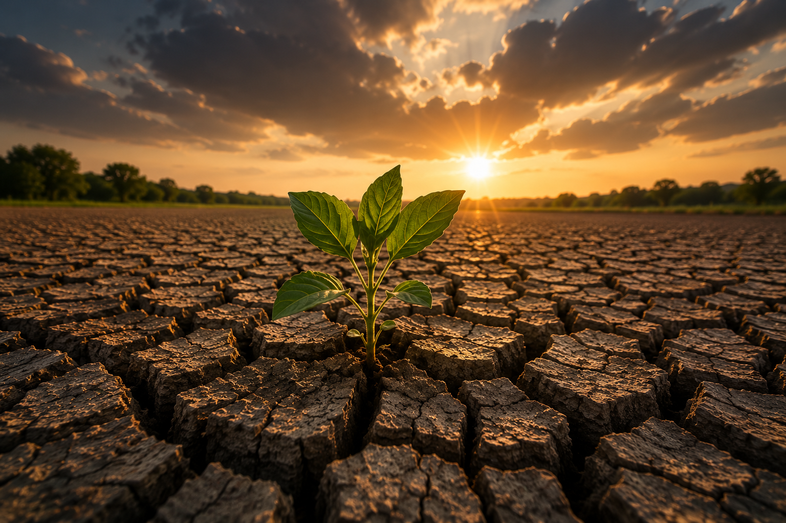
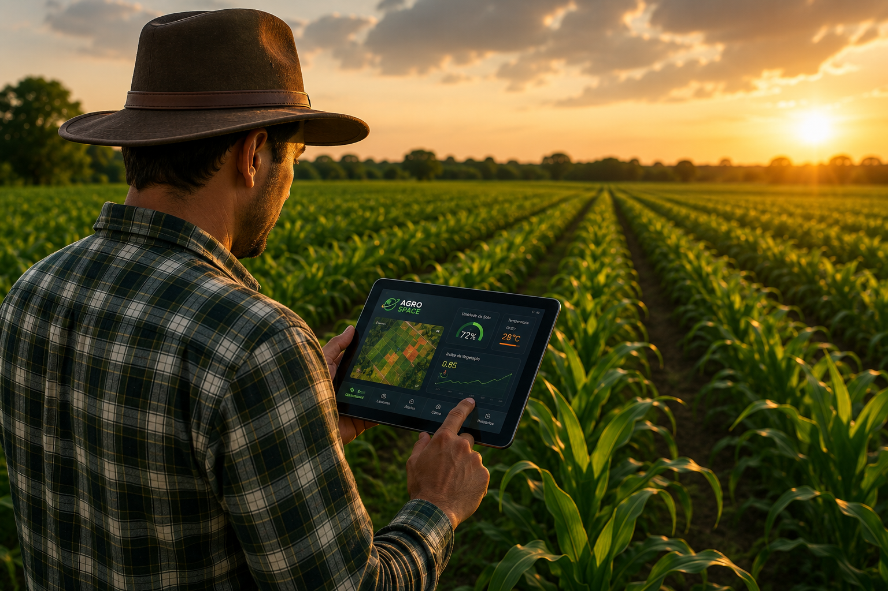
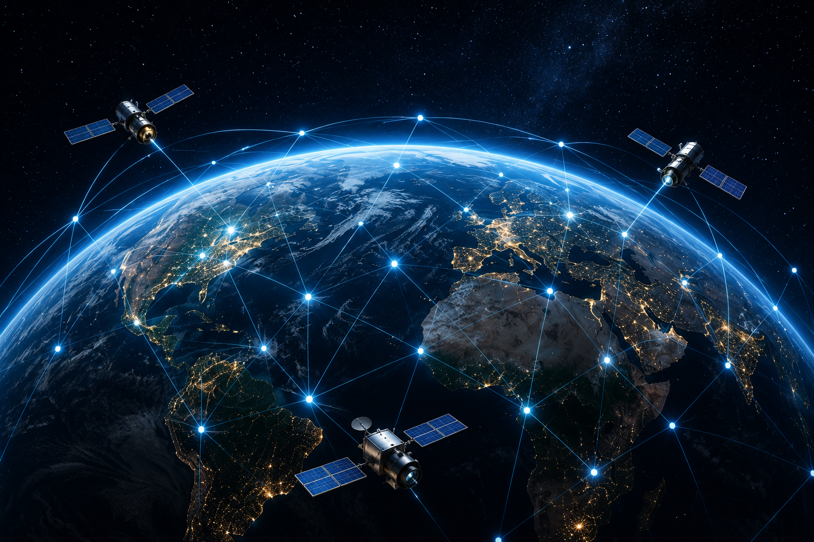

Conectando o Espaço ao Agronegócio
Plataforma inteligente que utiliza imagems para auxiliar na gestão agrícola


O Problema
Agricultores possuem dificuldade para monitorar grandes áreas e prever problemas climáticos.
A falta de dados em tempo real pode causar desperdício de recursos, queda na produtividade e prejuízos financeiros.
Objetivos
Monitorar plantações.
Reduzir desperdícios.
Melhorar produtividade.
Gerar alertas preventivos.
Público-Alvo
Pequenos, médios e grandes produtores rurais,cooperativas agrícolas e órgãos ambientais.

Benefícios
Economia
Menor desperdício de recursos e maior gestão de recursos.
Precisão
Dados em tempo real e de fácil acesso.
Sustentabilidade
Produção mais eficiente.
Aplicação no Dia a Dia
O agricultor acessa um painel com dados da lavoura, alertas climáticos e recomendações.
Ods Relacionados com o projeto

ODS 2: Fome Zero e Agricultura Sustentável
Contribui para a segurança alimentar e agricultura sustentável.
ODS 9: Indústria, Inovação e Infraestrutura
Promove a inovação tecnológica no setor agrícola.
ODS 13: Ação Contra a Mudança Global do Clima
Ajuda agricultores a se adaptarem às mudanças climáticas.